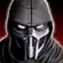
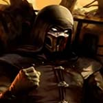
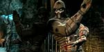
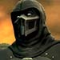
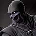

<!DOCTYPE html>
<html>
  <head>
    <title>Mortal Kombat Noob Saibot Profile</title>
    <meta charset="utf-8">
    <meta http-equiv="X-UA-Compatible" content="IE=edge">
    <meta name="viewport" content="width=device-width, maximum-scale=1.0, user-scalable=no">
    <link rel="stylesheet" href="https://fonts.googleapis.com/css?family=Lato:400,400i,700,700i|Oswald:400,500,600,700&amp;display=swap">
    <link rel="stylesheet" href="../css/ejercicio-sass.css">
    <script src="https://kit.fontawesome.com/552ebddad2.js"></script>
  </head>
  <body></body>
</html>
<main>
  <section class="perfil">
    <h2 class="perfil__nombre">Bi-Han (Noob Saibot)</h2>
    <h3 class="perfil__titulo">Espectro</h3><a class="perfil__boton" href="#">Seguir</a>
    <div class="estadistica--perfil">
      <div class="estadistica_elemento">
        <h3>12k</h3><span>Seguidores</span>
      </div>
      <div class="estadistica_elemento">
        <h3>1.7k</h3><span>Siguiendo</span>
      </div>
      <div class="estadistica_elemento">
        <h3>48</h3><span>Articulos</span>
      </div>
    </div>
    <div class="perfil__minibio">
      <h2>Acerca de Mi</h2>
      <h3>Original Sub-Zero y Ex asesino del Lin Kuei</h3>
    </div>
    <div class="ubicacion--perfil"><i class="fas fa-map-marker-alt"></i>
      <h2>Mundo Exterior</h2>
      <h3>???km Muy lejos </h3>
    </div>
    <div class="galeria">
      <h2>Mis Fotos</h2>
      <div class="galeria__foto-principal"></div>
      <div class="galeria__fotos-adicionales"></div>
    </div>
  </section>
  <aside class="articulos">
    <div class="articulo"><span class="articulo__categoria">Mortal Kombat 3 / Ultimate Mortal Kombat 3</span>
      <h2 class="articulo__titulo">Noob Saibot se alía con el malvado emperador del Mundo Exterior Shao Kahn, pero observa en secreto al emperador a instancias de la Hermandad de la Sombra.</h2>
      <p class="articulo__descripcion"></p>
    </div>
    <div class="articulo"><span class="articulo__categoria">Mortal Kombat (2011)</span>
      <h2 class="articulo__titulo">Raiden recibe visiones de su futura contraparte mientras asiste al torneo Mortal Kombat. Después de que una de las visiones revela la transformación de Bi-Han en Saibot, intenta evitar que Scorpion asesine al primer Sub-Zero ofreciéndose a pedirle a los Dioses Antiguos que resuciten a los Shirai Ryu. Esto falla cuando el hechicero Quan Chi manipula a Scorpion con una visión de Bi-Han asesinando a su familia. Después de su muerte, Bi-Han es posteriormente resucitado por Quan Chi para servir como uno de sus ejecutores aparecidos no muertos.</h2>
      <p class="articulo__descripcion"></p>
    </div>
    <div class="articulo"><span class="articulo__categoria">Mortal Kombat 11</span>
      <h2 class="articulo__titulo">Noob Saibot regresa, habiendo sobrevivido misteriosamente al Tornado de almas y adquirido poderes amplificados. Escondido en las sombras durante años, la muerte de Quan Chi libera a Saibot de la esclavitud. Después de que el guardián del tiempo, Kronika, fusiona las líneas de tiempo pasadas y presentes, Noob le prometió lealtad a ella a cambio de un clan oscuro propio. Ayuda a Sektor desplazandose en el tiempo y a Cyber Frost a secuestrar a los miembros del clan Lin Kuei y convertirlos en guerreros cyborg antes de intentar evitar que los recién aliados Scorpion y Sub-Zero frustren sus planes, solo para ser derrotados y obligados a retirarse con el cuerpo desactivado de Sektor.</h2>
      <p class="articulo__descripcion"></p>
    </div>
  </aside>
</main>